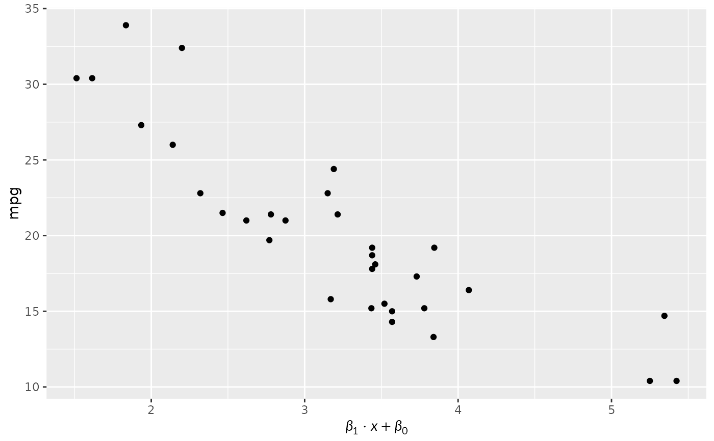

A theme element that renders text, such as an axis or plot title, as
LaTeX. The $ signs are optional. It takes the same settings as
ggplot2::element_text() and inherits from the theme like it.
Arguments
- math_font
Math font:
"lete"(Lete Sans Math, the default),"stix"(STIX Two Math), or one added withload_font(). Seeavailable_fonts(). A font that is not loaded, or has no math table, is an error.- fontsize
Font size in points.
NULL(default) uses the theme's size.- lineheight
Line spacing (default 1.2).
- max_width
Width in big points (1/72 inch) at which lines wrap.
0, the default, does not wrap.- input_mode
How
texis read:"mixed"(default): text, with math between$...$or\(...\). A newline starts a new line."math": everything is math; write text in\text{}."document": a LaTeX document body, with paragraphs, numbered headings and displayed equations. Use it withmax_width.
- render_mode
"typeface"(default) draws glyphs as text, which can be selected in PDF and SVG output. It needs a device such as ragg, svglite orgrDevices::cairo_pdf(), and falls back to"path"on others, such aspdf()."path"draws glyphs as outlines, which works on every device.- ...
Passed to
ggplot2::element_text(), such ascolourorhjust.
Examples
# \donttest{
if (requireNamespace("ggplot2", quietly = TRUE)) {
library(ggplot2)
ggplot(mtcars, aes(wt, mpg)) + geom_point() +
labs(x = "$\\beta_1 \\cdot x + \\beta_0$") +
theme(axis.title.x = element_latex())
}

# }